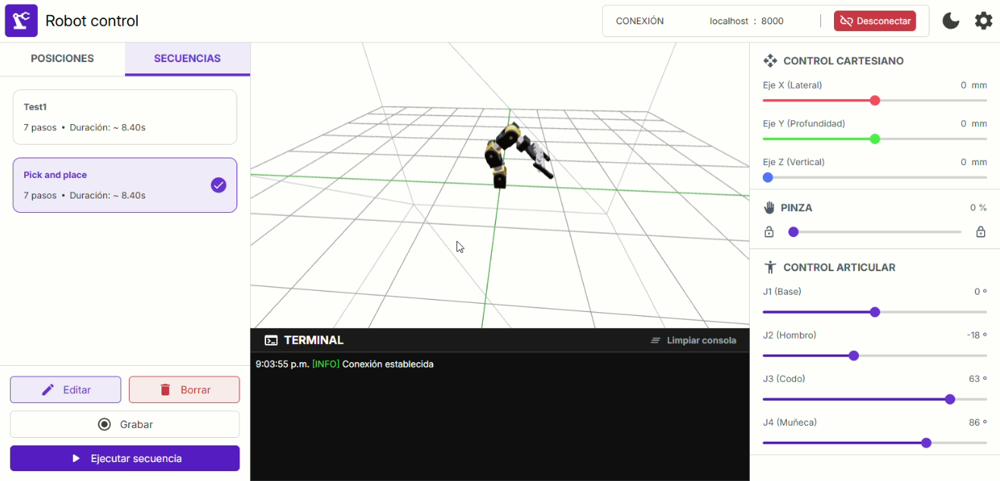

Back to main page

Cross-platform desktop application designed to provide an intuitive and flexible way to control a robotic arm. The tool allows users to interact with the robot through both joint-space and Cartesian-space controls, visualize the arm’s current pose in real time using an integrated 3D widget, and actuate the gripper with precision. Additionally, it includes a JSON-based system to create, store, update, delete, and replay predefined positions, enabling repeatable motions and easier experimentation. The application also features a live console panel that streams logs from a FastAPI backend, improving debugging, monitoring, and overall system transparency during operation.
Cross-platform interface: Designed a robotic arm control interface using React and TailwindCSS, later packaged as a desktop application with Tauri.
Motion control: Implemented joint-space and Cartesian-space sliders, including precise gripper actuation.
3D visualization: Added a real-time 3D widget to display the robotic arm’s current pose.
Position management: Developed a JSON-based CRUD system to create, update, delete, and replay predefined arm positions.
Live console: Built a real-time console panel that renders logs streamed from a FastAPI backend.